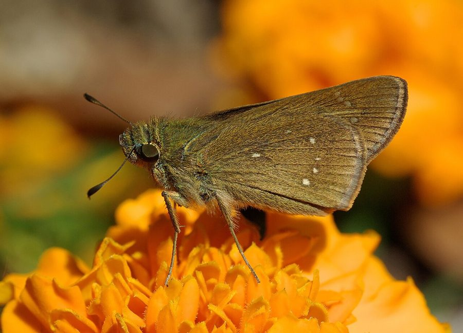

डार्क स्मॉल ब्रांडेड स्विफ़्ट तितलीDark Small Branded Swift
Pelopidas mathias · Hesperiidae · INS-0136

- Scientific name वैज्ञानिक नाम
- Pelopidas mathias (Fabricius, 1798)
- Family कुल
- Hesperiidae
- Hindi हिंदी
- डार्क स्मॉल ब्रांडेड स्विफ़्ट तितली
- Local names स्थानीय नाम
- dark small branded swift, swift
- Status here यहाँ की स्थिति
- native
- Movement आवागमन
- Resident, here all year
- Known from कहाँ दर्ज
- Others have published records from the wider Awadh–Purvanchal plain, none yet from Basti–Ayodhya अवध–पूर्वांचल से दूसरों के प्रकाशित अभिलेख, बस्ती–अयोध्या से अभी नहीं
- IUCN IUCN
- not evaluated
- Review समीक्षा
- audited and independently read
When to look कब देखें
Present all year. साल भर मौजूद।
Tell it apart from इनसे अलग पहचानें
डार्क स्मॉल ब्रांडेड स्विफ़्ट तितली / Dark Small Branded Swift
Pelopidas mathias (Fabricius, 1798) — Hesperiidae
डार्क स्मॉल ब्रांडेड स्विफ़्ट तितली — एक छोटी काली-भूरी तितली जो धान के खेतों में रहती है। इसकी उड़ान बहुत तेज़ होती है। इसके पंखों पर छोटे-छोटे सफ़ेद धब्बे होते हैं ("ब्रांडेड" नाम यहाँ से आता है)। यह तितली धान और घास की पत्तियों पर अपने अंडे देती है। इसके कैटरपिलर को धान की पत्तियों को खाना पसंद है और कभी-कभी नुकसान भी पहुँचा सकता है।
Quick Identification त्वरित पहचान
| Feature | Description |
|---|---|
| Size | Very small butterfly, wingspan 20-24 mm |
| Colour | Dark brown to black-brown with white patches and spots |
| Pattern | Distinctive white spots and bands ("branded" appearance) on dark ground |
| Spots | Multiple white spots on forewings; white patch on hindwings |
| Underside | Dark with white markings visible |
| Flight | Extremely rapid, darting flight; stays close to grass |
Field tip: A small, dark butterfly with distinctive white markings on dark brown wings. Very fast flier. Often seen in rice paddies and grasslands. Very similar to Rice Swift but noticeably darker overall.
हिंदी — कैसे पहचानें: काली-भूरी तितली, सफ़ेद धब्बे। धान के खेत में। बहुत तेज़ उड़ान।
Morphology आकारिकी
Biometrics:
| Measurement | Range |
|---|---|
| Wingspan | 20-24 mm |
| Forewing length | 10-12 mm |
| Body length | 7-9 mm |
Wings:
- Upperside: Dark brown to black-brown ground colour with distinctive white spots and patches; particularly prominent white markings on hindwings; a characteristic band of white spots on forewings.
- Underside: Paler than upperside but still relatively dark; white markings visible.
Body: Dark brown to black; antennae clubbed.
Sexual dimorphism: Males and females are similar; females are slightly larger.
Distinctive features: The white "brands" (spots and bands) on dark wings are diagnostic of this species and related species.
Life Cycle / Phenology जीवन चक्र
| Stage / Month | Event |
|---|---|
| January–December | Year-round; multiple overlapping generations |
| Egg | Laid on rice, grass, and sedges; incubation 5-7 days |
| Larva | Green caterpillar; feeds on rice leaves and grass blades; 2-3 weeks; can cause damage |
| Pupa | Small, formed among grass stems or leaf bases; 5-10 days |
| Adult | 2-4 weeks lifespan; very active during rice-growing season |
| Peak season | June–October during monsoon and grain harvest |
हिंदी: साल भर। धान के खेत में सबसे ज़्यादा। हरा कैटरपिलर पत्तियों को नुकसान पहुँचाता है।
Host Plants or Prey आहार
Larval host plants:
- Rice (Oryza sativa)
- Various grasses: Imperata cylindrica, Brachiaria mutica, and other grass species
- Sedges and related plants
Adult food sources:
- Nectar from flowers
- Sap from fermenting matter
- Damp spots on ground
Predators / Natural Enemies शत्रु
- Spiders: Web-building spiders, particularly in rice paddies
- Small birds: Warblers and other insectivorous birds
- Parasitoid wasps: Parasitise caterpillars and pupae
- Ants: May predate pupae
Agricultural / Human Relevance कृषि प्रासंगिकता
Minor rice pest. The caterpillars feed on rice leaves and can cause light to moderate damage in rice paddies, particularly when populations are high. Considered a minor pest in rice-growing areas. Also documented as a pest of millet crops.
Pest status varies regionally. In some regions, particularly those with intensive rice cultivation, this species can cause noticeable crop damage. In other areas, damage is negligible.
Population dynamics. Populations vary seasonally, with peaks during the monsoon and grain-growing season (June–October) when rice paddies are flooded and growing actively.
Today. Common in rice paddies and grasslands during the growing season. Recognized as a minor rice pest in parts of India.
हिंदी: धान के खेतों में कभी-कभी नुकसान। अन्यथा आम।
Expected Locally स्थानीय रूप से अपेक्षित
Not a field record. Written from published accounts for eastern Uttar Pradesh. No confirmed local sighting yet — if you have seen it, that is what the atlas needs.
अभी तक स्थानीय पुष्टि नहीं। यह विवरण प्रकाशित स्रोतों से है, किसी अवलोकन से नहीं।
To be expected year-round in rice paddies, grasslands, and grain-growing areas throughout the region, with peak abundance during the monsoon and grain-growing season (June–October). Look in flooded rice paddies and grasslands, particularly near water. A photograph with date and location would confirm a local record.
Distribution वितरण
Global range: Tropical Africa and Asia, including India, Myanmar, Thailand, and other Southeast Asian countries.
In India: Distributed throughout rice-growing regions; recorded in most states where rice is cultivated.
In Uttar Pradesh: Found in rice paddies and grasslands throughout grain-growing regions of the state.
In Basti district / eastern UP: Expected in rice paddies, grasslands, and cultivated grain areas year-round, particularly abundant during monsoon and grain harvest season (June–October).
Research Questions शोध प्रश्न
Anyone can investigate these | कोई भी इन प्रश्नों की जाँच कर सकता है
- How many generations of Dark Small Branded Swift occur in Basti rice paddies per year? / धान के खेतों में एक साल में कितनी पीढ़ियाँ होती हैं? — Track pupae and emergence throughout the year.
- How much leaf damage can caterpillars cause to rice plants in local paddies? — Quantify feeding damage in field conditions.
- Is this species distinguishable from Borbo cinnara in the field, or only under magnification? / क्या यह Rice Swift से खेत में अलग दिखता है? — Make detailed comparisons.
- What proportion of caterpillars fall victim to parasitoid wasps in local paddies? — Rear pupae indoors and record wasp emergence.
- Does the abundance of this butterfly increase with pesticide spraying, or decrease? — Compare populations on sprayed vs. unsprayed paddies.
Similar Species मिलती-जुलती प्रजातियाँ
| Species | How to tell apart | हिंदी |
|---|---|---|
| Borbo cinnara (Rice Swift) | Very similar; lighter brown overall; white markings less prominent; reddish-brown patches on forewings | राइस स्विफ़्ट — हल्की भूरी |
| Other Hesperiidae (skippers) | Generally larger or with different colour and pattern; different habitats | दूसरे स्किपर |
Field rule: A very small, dark brown to black-brown butterfly with prominent white spots and bands on dark wings, with extremely rapid flight in rice paddies, is the Dark Small Branded Swift.
Taxonomy & Classification वर्गीकरण
Original description. Described by Fabricius in 1798. Type locality: India.
Subspecies. Multiple subspecies recognized. The subspecies found in India is Pelopidas mathias mathias (Fabricius, 1798).
Family and order placement. Order Lepidoptera, family Hesperiidae (skippers), subfamily Hesperiinae. The genus Pelopidas includes several branded swift species.
Phylogenetic notes. Hesperiidae are characterized by robust bodies, rapid flight, and adaptation to grass and grain habitats.
IUCN status rationale. Not formally assessed. Abundant and widespread; no conservation concerns.
Photo Gallery फोटो गैलरी
No photos yet — add field photos to media/species/dark_small_branded_swift/ and run node scripts/sync_photos.js.
Wanted:
- Adult showing dark brown colour with white spots
- Close-up of white branded patterns on wings
- Underside view
- Adult in rice paddy
- Caterpillar on rice leaf showing feeding damage
- Adult in flight (if possible)
References संदर्भ
- Fabricius, J.C. (1798). Supplementum Entomologiae Systematicae. [original description]
- Kunte, K. (2009). Butterflies of Peninsular India. Universities Press, Hyderabad.
- Kehimkar, I. (2016). BNHS Field Guide: Butterflies of India. Bombay Natural History Society, Oxford University Press, Mumbai.
- Indian Foundation for Butterflies. Checklist of Indian Hesperiidae and Host Plants. Retrieved from https://www.ifoundbutterflies.org
- Wynter-Blyth, M. A. (1957). The Butterflies of India. 2nd edition. Bombay Natural History Society.
- GBIF Occurrence Data — Pelopidas mathias, Asia (2023). GBIF taxon key: [to be filled].
Source file: species/fauna/insects/dark_small_branded_swift.md